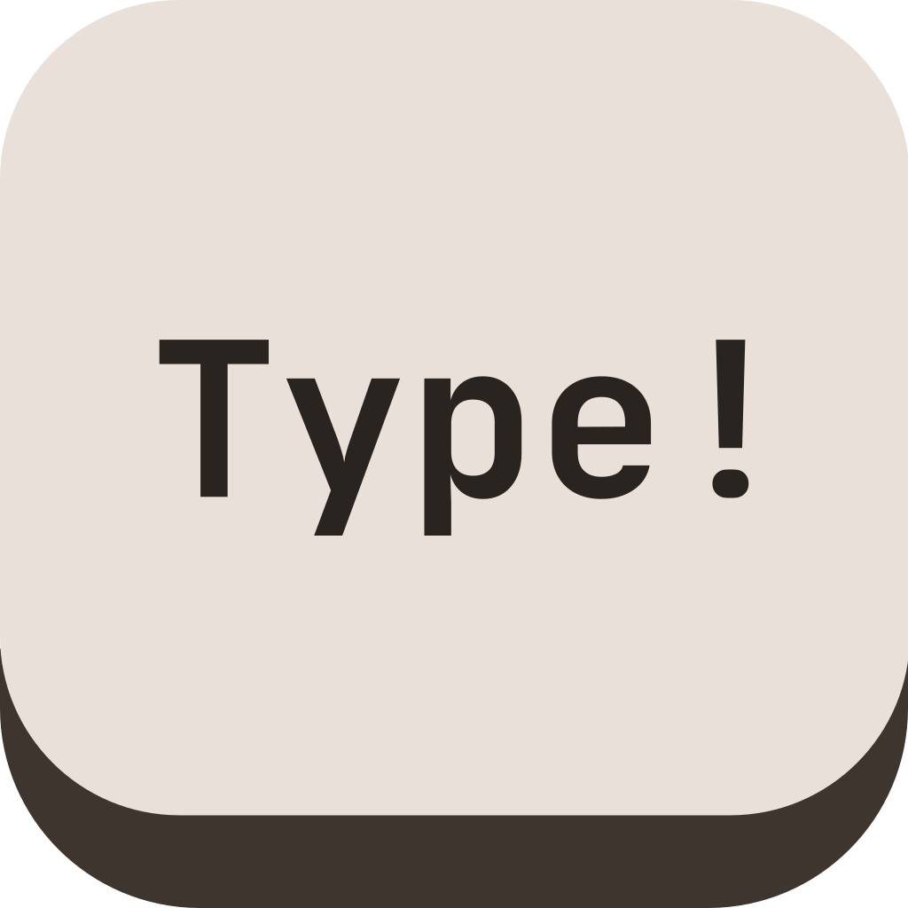
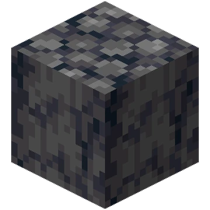

I'm pursuing a B.S. in Business Administration with a focus in Finance and Accounting. I enjoy building software, learning about financial markets, photography, cars, and staying active.
I'm currently a Sales & Finance Intern at a local manufacturers rep firm, where I work with expense reporting, credit card reconciliation, Microsoft Dynamics 365, Business Central, and Excel. Outside of work and school, I build web apps and other software projects.
A privacy-focused file sharing service for quickly transferring files between devices, with automatic deletion after 24 hours.
A free, browser-based background remover that processes images locally with no account or server upload required.
A lightweight, modern calculator built for quick everyday calculations.

A vanilla TypeScript and Tailwind CSS Monkeytype clone built from scratch to learn core frontend logic, event handling, timer calculations, and DOM manipulation without relying on frameworks.
A daily guessing-game platform with multiple Wordle-inspired games where players use conditional clues to identify the mystery subject.

A lightweight Minecraft server implementation written in Rust that boots in milliseconds and is designed for low overhead.
I decided to build Type! because I wanted to improve my programming skills, especially on the frontend. I wanted to understand how a web app works without relying on a frontend framework, and a typing game seemed like a fun project that would force me to work with real-time input, timers, state, and DOM updates. For this project, I tried to work through the implementation myself instead of having AI generate the application for me. Most problems were solved through testing, debugging, documentation, and research. When I got stuck, I used AI more like a tutor by asking for explanations, hints, or the next step rather than complete solutions. I also used it for less important parts of the project, such as generating color schemes for the theme selector. Building this has helped me get more comfortable with TypeScript, event listeners, DOM manipulation, localStorage, timers, and keeping application state organized. More importantly, it gave me a better understanding of how the different pieces of a frontend application work together without a framework handling those details for me.
I built Erasr.xyz because I wanted a simple, free, and privacy-focused background remover that didn't require an account or server upload. However, the original idea didn't actually come from a problem I was trying to solve myself. A day before publishing it, I was scrolling on my phone and came across a video complaining that the popular background removal service remove.bg was being bought by Canva and would eventually cost money. I didn't fact-check the claim, but I jokingly left a comment saying, "i will code a free replacement and report back." The next time I opened the app, the comment had around 3,000 likes. At that point, it looked like I actually had to make it. Since then, the comment has grown to well over 16,000 likes and more than 150 replies, with people asking for the site and saying they would actually use something like it. I built and released Erasr.xyz that night, and it quickly received hundreds, and eventually up to 2500 visits, with people actively using the site. That was probably the coolest part of the project for me. It didn't make me any money, but something I made was actually useful to thousands of people. A lot of my personal projects come from small problems I run into myself, so seeing complete strangers use something I built was a completely different experience. Because I wanted to get the site working and released while the original post was still getting attention, I can't take full credit for all of the code behind Erasr.xyz. I used AI to help develop it within the short timeframe, particularly for the actual background removal implementation. I helped design the overall layout, theming, and user experience myself, taking some inspiration from the simple design of this portfolio. I also handled deployment through Vercel, along with debugging and testing the site with around 20 different images and settings to make sure it worked reliably. One of the main goals was to keep the site completely local. Erasr.xyz doesn't need accounts, a database, or a backend for processing images. Instead, the background removal models run directly inside the user's browser. The fast model is small enough to be shipped with the site, while the higher-quality model is downloaded when needed and cached by the browser so it doesn't need to be downloaded every time. The background removal itself uses open-source machine learning models and browser-based libraries to process the image locally. This means an image doesn't need to be uploaded to my server or processed somewhere else. Once the site and model are loaded, the actual processing happens on the user's own device. Building Erasr.xyz was a very different experience from some of my other projects. It was less about slowly learning every part of the project and more about taking an unexpected idea, building something functional as quickly as possible, testing it, deploying it, and watching real people use it. It showed me how quickly a small idea can turn into something useful when there is actually a demand for it.